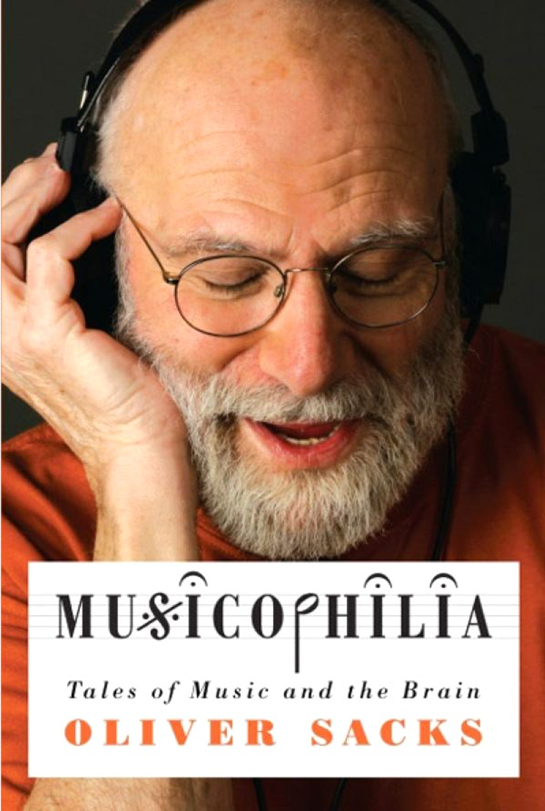

Music & medicine
Krzysztof Basiński
Williams Syndrome
- Rare neurodevelopmental disorder – 1 in 7,500 to 20,000 births
- Genetic origin – deletion of more than 25 genes in the chromosome 7
- Symptoms:
- Heart defects
- Unusual facial features – ’elfin’ appearance
- Developmental delay but strong language features
- Failure to gain weight in infancy, low muscle tone
Williams Syndrome - psychological symptoms
- Overall psychomotor development delayed
- Intelligence generally lower than average (IQ from 40 to 112, mean of 69, study of 306 children with WS)
- Intellectual deficits in visuospatial and motor skills (adults with WS often cannot complete a 6-piece children’s puzzle)
Williams Syndrome - psychological symptoms
- Higher anxiety levels, often developing phobias and other anxiety disorders (hypersensitivity)
- Comorbidity - ADHD
Williams Syndrome - psychological symptoms
- Language skills delayed in semantics, morphology and phonology, but not vocabulary.
- Task: name animals. Child with WS: “koala, saber-toothed cat, vulture, unicorn, sea lion, yak, ibex and brontosaurus”
- Lack of social inhibition
- Often phenomenal musical abilities – perfect pitch, strong sense of rhythm, ability to produce polyrhythms without training
Neurologic disorders and music functioning - case studies

Tony Cicoria
- Small-town surgeon, 42 years old
- One day was hit by a lightning
Tony Cicoria
“…I got this wonderful feeling of calmness and peace. All the ups and downs in my life stood before my eyes, but no bad feelings, pure thinking and extasy. I felt sudden acceleration, a flight, there was momentum and direction… Most fantastic feeling that I’ve ever experianced…”
Tony Cicoria
- He suffered no major injuries
- A slight loss of energy and sluggishness in the first few days following the accident
- One day symptoms went away but…
- “… I felt a sudden urge to listen to piano music…”
Tony Cicoria
- Dr Cicoria was never especially interested in music, never played an instrument
- After the accident, he experienced “obsessive thoughts about music”
- “I got up as early as 4 a.m. and played the piano until it was time to go to work. When I got home, I played more, until it was time to go to bed. I was acting as if I was posessed”
Tony Cicoria
- He got divorced a couple of years later (his wife couldn’t handle it)
- A passion for music did not go away
- He took piano lessons
- Started to play concerts
- Found a new wife, a professional piano player
What happened?
- Out-of-body experience has a neurological correlate – abnormal pattern of activity in the region between temporal and parietal lobes
- Mystical experiences, intense emotions – amygdala, brainstem nuclei
- These symptoms are often described in people who found themselves in extreme danger – sudden trauma, lightning, cardiac arrest
- Sudden, strong, noradrenaline secretion
But why musicophilia?
- During the accident, dr Cicoria’s brain was probably in the state of hypoxia for about a minute – sluggishness, loss of energy
- Cortical damage was not diagnosed (1994, MRI was not that great then)
- It is possible that musicophilia is a result of functional plasticity due to cortical damage
Jon S. – musical epilepsy
- Jon S., 45 years old, in good health until…
- One day got up from the desk to fetch something and heard music
- “…classical, melodic, very pleasant, strangely fammiliar…”
- Woke up in the hospital a few hours later
- During medical examination heard the same music again
Jon S. – musical epilepsy
- What happened?
- Sudden temporal epilepsy – music as an aura
Eric Markowitz – musical epilepsy
- A patient after operation – non-malignant tumor in the temporal lobe was removed
- The tumor relapsed after 10 years, this triggered epileptic seizures
- Did not loose consciousness during seizures, only experienced severe musical hallucinations
- The music seemed familiar, but could not be precisely described
M.Critchley (1939) – epilepsy triggered by music
- Described 11 cases of seizures triggered by musical stimuli
- A radio operator on a ship had seizures when he heard brass instruments – needed to change to trade ships where there was no orchestra
- Other patient was sensitive only to the note G#
The case of Nikonov
- Nikonov was a Russian music critic, late nineteenth century
- He first had an epileptic seizure during an opera performance
- The seizures became very frequent, triggered only by music
- He needed to change his profession and walked the streets of St.Petersburg with ear plugs.
Poskanzer, Brown, Miller – case of Bow Church
- Male, 62 years old, was loosing cautiousness every day at 8.59 p.m. while listening to the radio.
- Epileptic seizures were triggered by the sound of the bells of Bow Church, a signal played each day on the BBC radio
- Patient was not sensitive to other sounds, not even other bells
- The seizures were produced by one, set sequence of sounds in a specific order